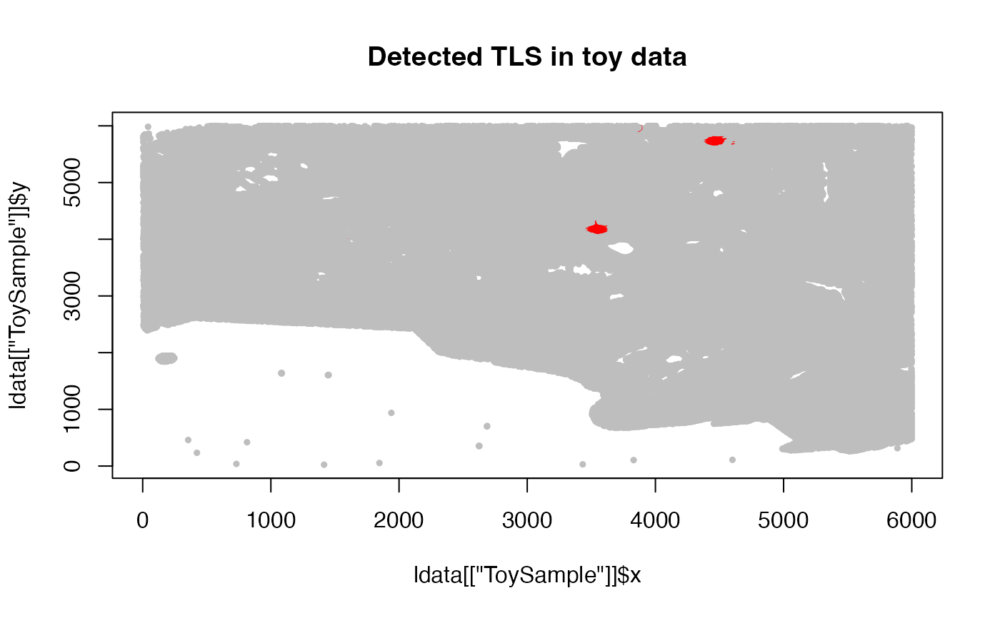

detect_TLS.RdIdentifies TLS candidates by finding regions of high local B-cell density
that also contain a sufficient number of nearby T cells (B+T
co-localisation). Phenotype labels "B cell" and "B cells"
(and their T-cell equivalents) are both accepted.
detect_TLS(
LSP,
ldata,
k = 30L,
bcell_density_threshold = 10,
min_B_cells = 50L,
min_T_cells_nearby = 10L,
max_distance_T = 50,
expand_distance = 80
)Character. Sample name in ldata.
Integer. Number of nearest neighbours used for density estimation
(default 30, calibrated for 0.325 um/px imaging).
Numeric. Minimum average 1/k-distance (in
microns) for a B cell to be considered locally dense (default 15).
Integer. Minimum B cells per candidate TLS cluster
(default 50).
Integer. Minimum T cells within
max_distance_T microns of the candidate cluster centre
(default 30).
Numeric. Search radius (microns) for T-cell proximity
check (default 50).
Integer. The extended values from the boundary of the deteced B-cells clusters that the T cells are bieng integrated (default 80).
Named list of data frames, or NULL to use the global
ldata object (deprecated; pass explicitly).
The similarly formatted ldata list, with the data frame for LSP
augmented by three new columns:
tls_id_knnInteger. 0 = non-TLS cell; positive
integer = TLS cluster ID.
tls_center_xNumeric. X coordinate of the TLS centre for
TLS cells; NA otherwise.
tls_center_yNumeric. Y coordinate of the TLS centre for
TLS cells; NA otherwise.
data(toy_ldata)
ldata <- detect_TLS("ToySample", k = 30, ldata = toy_ldata)
#> Detected TLS: 2
table(ldata[["ToySample"]]$tls_id_knn)
#>
#> 0 1 2
#> 321383 1115 453
plot(ldata[["ToySample"]]$x, ldata[["ToySample"]]$y,
col = ifelse(ldata[["ToySample"]]$tls_id_knn > 0, "red", "gray"),
pch = 19, cex = 0.5, main = "Detected TLS in toy data")
